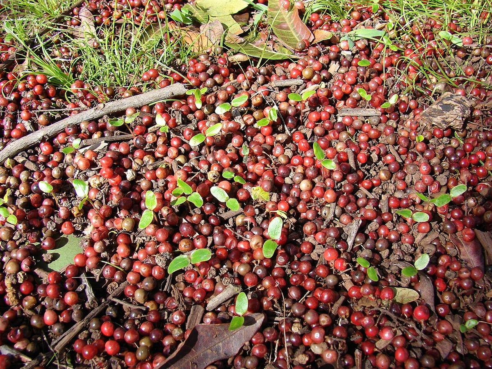
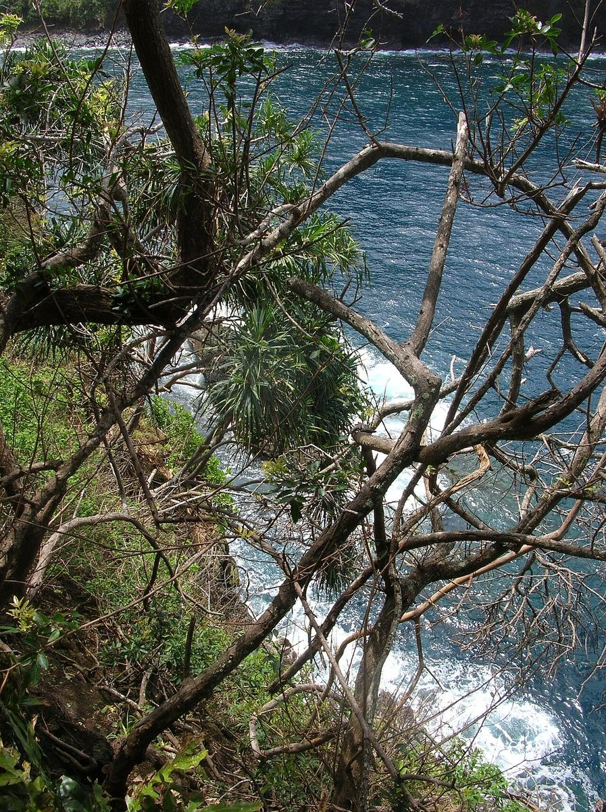

RARE & EXOTIC Valley mouth Sea cliff Riparian
Schinus terebinthifolia
— · Christmas berry, Brazilian pepper


Quick facts
| Family | Anacardiaceae |
|---|---|
| Scientific name | Schinus terebinthifolia |
| Hawaiian name(s) | — |
| English name(s) | Christmas berry, Brazilian pepper |
| Status | Invasive |
| Conservation | Widely designated invasive (Hawaii Invasive Species Council alert list; ISSG / IUCN Global Invasive Species Database; HEAR; Plant Pono high-risk); not statutorily listed as a Hawaii state noxious weed per HAR §4-68 (which is a targeted eradication list dominated by species such as Miconia, banana poka, and kahili ginger) |
| Coastal zones | Valley mouth Sea cliff Riparian |
| Occurrence | Widespread and dominant in the drier lower Nā Pali valleys and along the Nā Pali–Kona coastal strand. Forms dense thickets in disturbed valley mouths, choking out native shrubs and hala understorey. |
Hazards: Sap can cause contact dermatitis (family Anacardiaceae — poison-ivy cousin). Do not crush leaves against exposed skin if you are sensitive. Berries are mildly toxic in quantity.
Uncertainty: The term "wilelaiki" is sometimes applied to this plant in Hawaiʻi. It does not appear in Wagner, Herbst & Sohmer's Manual [1] as a traditional Hawaiian botanical name. Weed and invasive-plant literature (e.g., Motooka et al. [14]) records the term as a Hawaiianized transliteration reportedly derived from "Willie Rice," a person associated with the plant's introduction or spread — a post-contact coinage rather than a traditional common name. We therefore omit it from the Hawaiian names list; a reader who encounters "wilelaiki" locally should recognize this same plant.
How to identify
- Growth form
- Dense, sprawling, evergreen shrub or small tree, 3–8 m tall, often multi-stemmed and forming impenetrable thickets. Branches arching.
- Size
- 3–8 m tall; thickets can be 15+ m across.
- Leaves
- Pinnately compound, 7–20 cm long, with 5–13 oblong leaflets on a winged central rachis (the wings between the leaflets are diagnostic). Leaflets glossy, slightly toothed, aromatic when crushed — reminiscent of turpentine or pepper.
- Flowers
- Tiny (~3 mm), whitish, in dense terminal branched clusters (panicles). Individually unshowy; conspicuous en masse.
- Fruit / seed
- Bright red to pink small drupes, ~5 mm, densely packed in showy clusters. Ripe November–January — hence "Christmas berry."
- Bark / stem
- Grey-brown, becoming rough on older stems.
- Where it sits on the coast
- Dry lower valleys and coastal slopes, thriving on disturbed ground; especially aggressive on the drier leeward stretches of the coast.
Clinchers (features that lock the ID)
- Pinnate leaf with a winged rachis between the leaflets (turn the leaf up to check).
- Bright red berry clusters in winter — the seasonal signature.
- Aromatic pepper/turpentine smell when a leaf is crushed.
- Dense arching thicket habit in disturbed ground.
Look-alikes
- Rhus sandwicensis (native neneleau, Hawaiian sumac) — Native sumac has a rachis without prominent wings, whiter flower clusters, and does not form the dense monotypic thickets of Christmas berry; typically upland, not coastal.
- Toxicodendron (poison oak/ivy, absent from Hawaiʻi) — Not present here. Included because Schinus is in the same family (Anacardiaceae) and its sap can cause a similar contact rash in sensitive people.
Ecology
Native to South America; introduced to Hawaiʻi as an ornamental in the late 1800s and now a major invader of lowland dry to mesic forest. Bird-dispersed berries carry it into remote valleys. Its dense canopy and allelopathic leaf litter suppress native seedling regeneration. [1], [2], [13], [14], [59], [60], [61]
Cultural significance
—